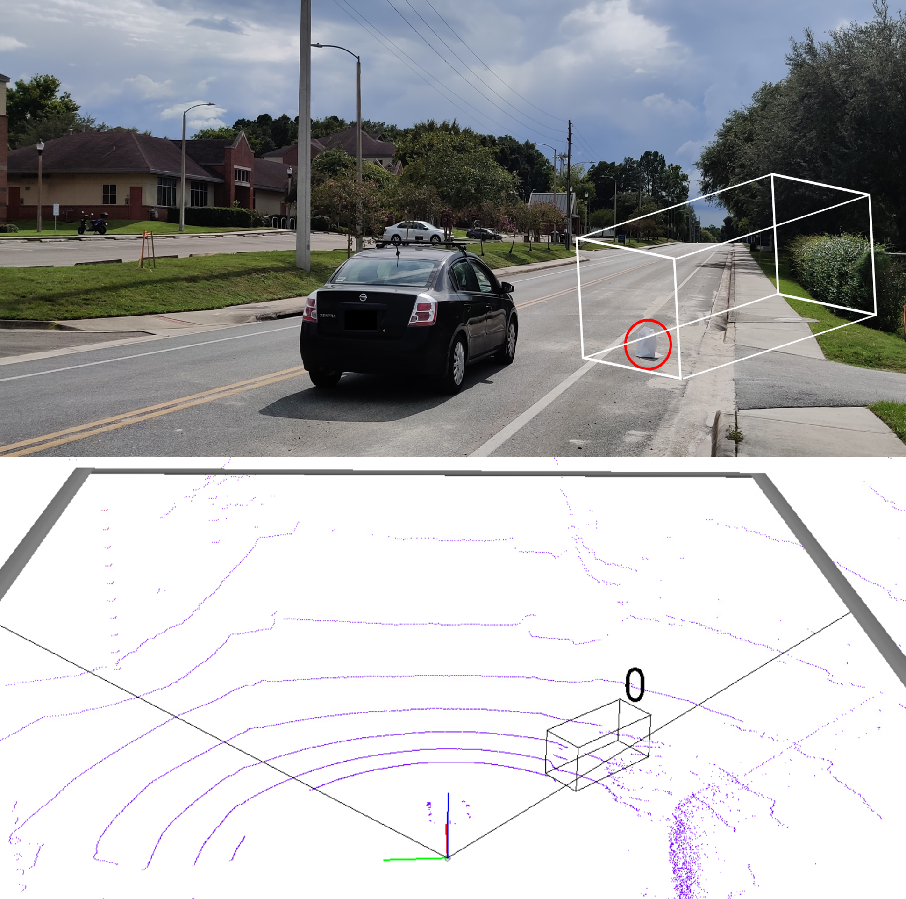

 Overview: Though the combination of DL models and 3D sensors is viewed as promising in many applications, its vulnerability exposed by OOD samples and cyber-attacks remains unaddressed. Many types of attacks, especially physical attacks, reveal the practicality of injecting malicious inputs through the front-end 3D sensors and lead the back-end DL models to specific wrong outputs.
This project is supported by NSF under grant EER-2347426.
Slected Publications:
[1]. "Robust roadside physical adversarial attack against deep learning in lidar perception modules", Yang K, Tsai T, Yu H, et al. ACM Asia Conference on Computer and Communications Security, HongKong, 2021.
[2]. "Robust adversarial objects against deep learning models", Tsai T, Yang K, Ho T Y, et al. AAAI Conference on Artificial Intelligence, New York, USA, 2020
Overview: The proliferation of deep learning, especially large language models (LLMs), has marked a paradigm shift today, leading to unprecedented advancements in various downstream tasks. Though deep learning is recognized as a promising solution to plenty of tasks, security concerns also arise regarding its vulnerabilities, such as adversarial examples, backdoor attacks, and jailbreak attacks. The threat of them against systems in real-world applications remains rather unexplored.
This project is supported by NSF under grant CI-2419880.
Overview: The integration of deep learning into hardware security has transformed the field, offering powerful solutions for tasks such as intrusion detection, malware analysis, and anomaly detection in embedded systems. However, as deep learning models continue to evolve, new security challenges emerge, including susceptibility to adversarial manipulation, model inversion attacks, and hardware Trojans. While deep learning provides robust mechanisms to enhance security, the resilience of these models in the face of sophisticated threats remains a critical area of exploration in real-world applications, where vulnerabilities could compromise the integrity of essential hardware systems.
Slected Publications:
[1]. "Dual-leak: Deep unsupervised active learning for cross-device profiled side-channel leakage analysis", Yu, H., Wang, S., Shan, H., Panoff, M., Lee, M., Yang, K., & Jin, Y. In 2023 IEEE International Symposium on Hardware Oriented Security and Trust (HOST)
[2]."A Generalize Hardware Debugging Approach for Large Language Models Semi-Syntectic Datasetse", Fu, W. Li, S. Zhao, Y. Yang, K, Zhang, X, Jin, Y. & Guo, X. 2024 IEEE Transactions on Circuits and Systems (TCAS).